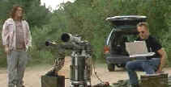

Jackal,
The/C,A |
Universal/1997/125m/WS,ANA 2.35
|
A re-make of the The Day of the Jackal, The
Jackal has too many teeth or too many dollars or too much technology. Take your
choice.
A Russian gangster's brother is killed in a gaudy Moscow
night club by the KGB with the help of the FBI (God knows what the FBI is doing there.) To
get revenge, the ruthless gangster hires an ultra cool professional for an astronomical
sum to execute a hit on an American public figure. As the jackal stalks his prey, setting
up the details of his hit, the forces for good are hot on his trail.
|

|
From a rifle to a war
machine. ©Universal |
Many of the plot elements and
devices from the original are used in this version, but almost always distorted by
excess. In almost every area, The Jackal is a proponent of excess. Take a simple
element like the assassination weapon. The original is an elegant rival that breaks down
into the parts of a crutch. Translate that into new Jackal terms and it becomes a huge
canon like weapon that is remote controlled by computer and needs a minivan to transport
it. While the jackal of the original moves about by changing identities, the new jackal
has to don multiple disguises to hide himself from authorities. The hair brigade should be
after him. And so it goes. The purity of the original is further mucked up by adding the
story of an imprisoned Irish terrorist who cuts a deal to lead the hounds after the
jackal. Add a female KGB officer to accompany the Irishman and what's left of the
methodical French policeman is all but helpless FBI operative.
Bruce Willis is a very cool jackal dude, equally at home in blond
hair with a lisp or a scraggly wig. He communicates by computer, buys arms like a third
world country and makes pithy comments with a 9mm canon. Too bad his character is defined
by bulging movie star salaries and not the standards of professional hit men. Richard Gere
fares much better as Declan Mulqueen, a terrorist with a soft spot for women and a passing
knowledge of the jackal. How he made it through the scenes when he's recruited by the FBI
with a straight face is beyond me. Diane Venora has the best role in the film as the KGB
agent who wears the scar on her face like a sexual security blanket. Sidney Poitier has
the impossible task of injecting life into an FBI agent who can do little more than flail
his arms in frustration.
Though toothless in cinematic execution, The Jackal is
still a beauty of a DVD. Universal has mounted it as a special edition including
commentary by director Michael Caton-Jones and a making of documentary produced for the
DVD. There are also deleted scenes and an alternate ending that subtly shifts the final
emphasis but makes little difference. Visually, the high tech images of The Jackal are
realized with extraordinary polish. Caton-Jones spares no gloss in his high key
cinematography and it shows no wear for its MPEG compression. Color is bright, detail is
stunning. The Dolby Digital 5:1 sound is as powerful as the jackal's weapon of choice.
Directionality is excellent, dynamic range full throttle.
|
|